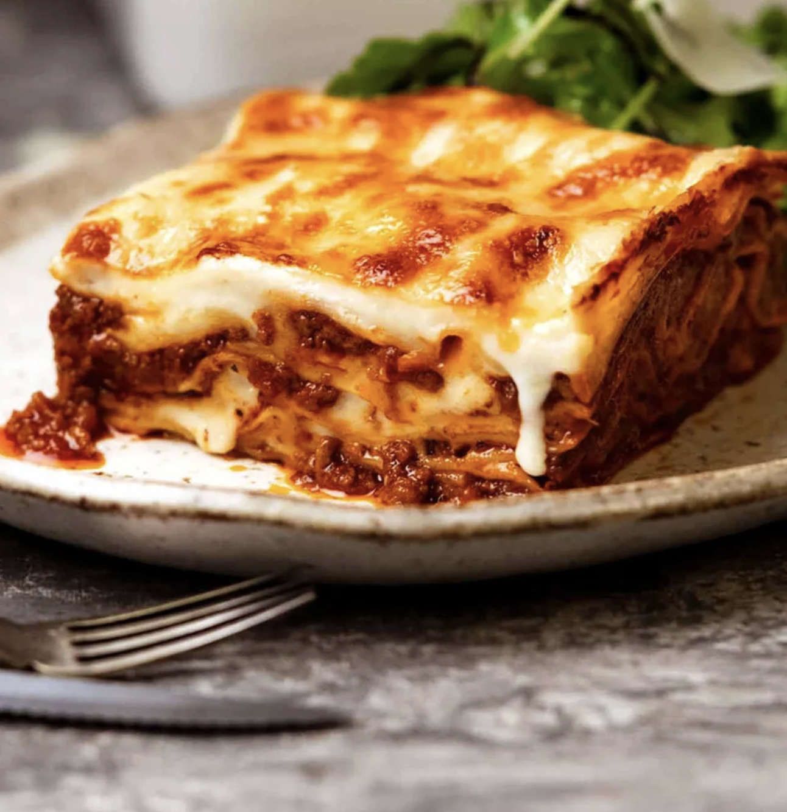

Lasgna Recipe
Short Introduction
Lasagna, lasagna. How I love thee! It is possibly one of the most loved foods in the whole wide world, and understandably so. There is just something so sentimental about lasagna, so comforting. It evokes images of of gatherings with family and friends all around the world. It is the sort of food that is like a big warm hug, and so more-ish you want to keep digging in until you burst
Lasagna just rocks. Full stop.
And if you’ve never tried a homemade one before, that needs to change! If you can make spaghetti bolognese, you can make lasagne. It just requires a wee bit more patience.
OK, bit more than a wee bit more patience. But it’s totally worth it. A real homemade Lasagna is epic.
Components of Lasagne
There are three components required in making a tasty lasagna.
- The meat sauce
- The white sauce: creamy and thick, but no cream is required!
- Assembling and Baking!
The ingredients needed for lasagna
- Onion
- garlic
- Canned tomato and tomato paste
- Optional: Red wine - for extra flavoring!
- Seasoning - beef bouillon cubes, bay leaves, oregano, brown sauce - choose what you like!
Steps of making Lasagna
- Cut the vegetables into small cubes to prepare for the sauce.
- Cook with beef mince to make the Bolognese sauce.
- Smear a bit of meat sauce on the base first – stops the lasagna sheets from sliding around.
- Put the layers up: top the first layer with meat sauce, lay a lasagna sheet and then put more meat sauce and white sauce.
- Topping – cover with lasagna sheets, pour over remaining white sauce then sprinkle with cheese.
- Pop it in the oven, and THIS is what comes out….
Click here to go back home
